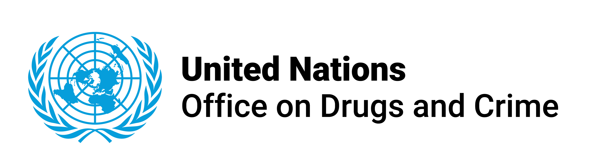
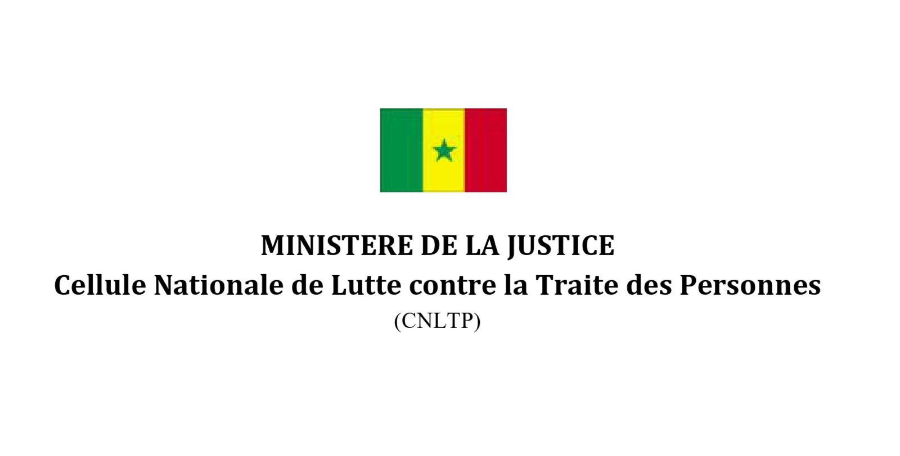
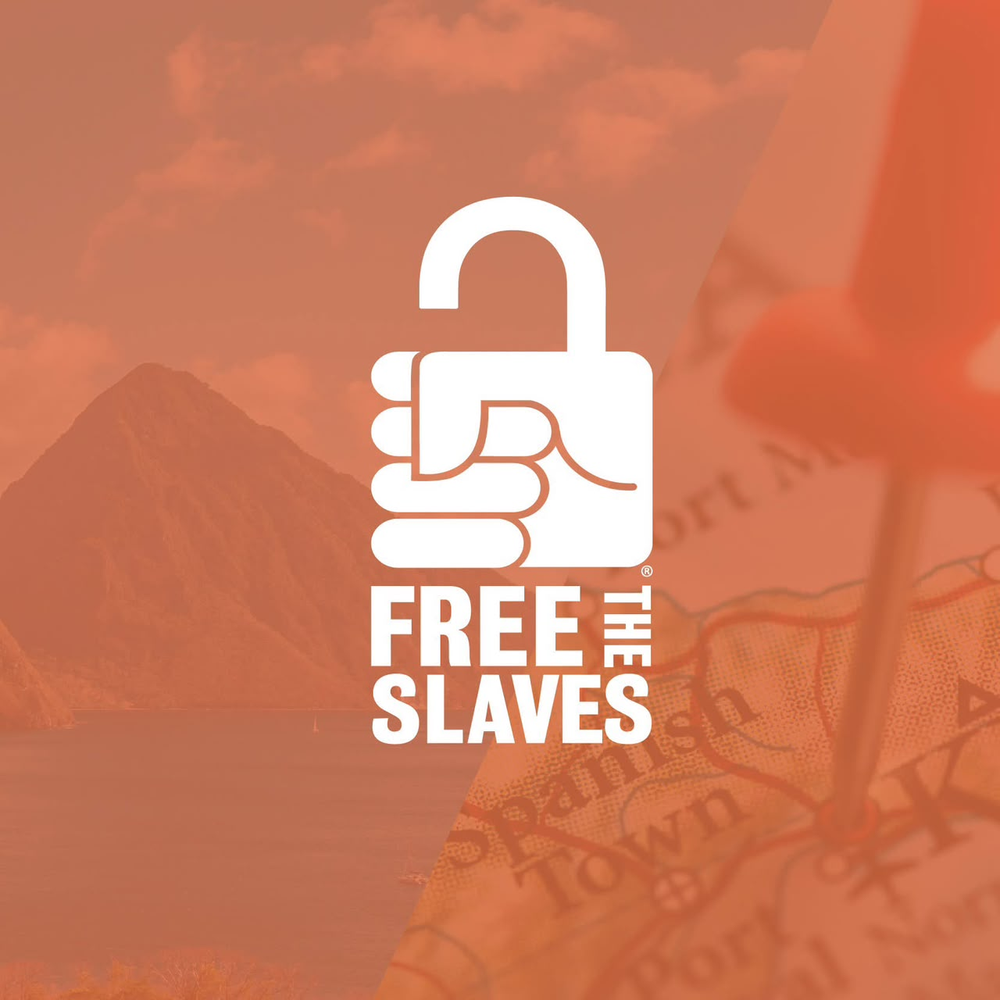

XAM TE AAR (Digital Defender)
Une réponse numérique innovante, souveraine et ancrée pour la prévention, le signalement sécurisé et la protection contre la traite des personnes et l’exploitation au Sénégal et en Afrique de l’Ouest.




Ancrage Géographique et Réalités du Sénégal
Une réponse technologique calibrée sur les routes réelles de vulnérabilité et d’exploitation en Afrique de l’Ouest.
Mendicité Forcée des Enfants
Détournement d'enfants vulnérables (phénomène des talibés mendiants) exploités économiquement dans les grands pôles urbains de Dakar, Thiès, Touba et Saint-Louis, souvent isolés de leurs familles.
Travail Forcé dans l'Orpaillage
Dans le sud-est du Sénégal (Kédougou, Sabodala), des milliers de travailleurs dont des femmes et mineurs sont soumis à des conditions d’exploitation extrême dans les mines artisanales informelles.
Traite & Exploitation Transnationale
Le corridor CEDEAO (Dakar – Bamako – Niamey – Conakry) est le théâtre de filières de traite sexuelle et d'esclavage domestique invisible, exploitant la détresse de migrants vulnérables.
Pourquoi les Canaux Traditionnels Échouent-ils ?
Les victimes et témoins font face à quatre verrous majeurs que la technologie doit briser.
La Peur des Représailles
Peur d'être identifié par les trafiquants ou rejeté par sa communauté. L'obligation de décliner son identité dans un commissariat bloque l'écrasante majorité des alertes.
La Fracture Linguistique
Les textes juridiques et formulaires sont rédigés en français administratif, inaccessibles à une grande partie de la population qui s'exprime en Wolof, Pulaar ou Sérère.
L'Inaccessibilité Géographique
Les services spécialisés de l'État (AEMO, brigades dédiées) sont souvent concentrés dans les capitales régionales, laissant les zones périphériques sans recours immédiat.
L'Absence de Traçabilité
Les alertes verbales ou téléphoniques se perdent souvent sans suivi structuré, empêchant la mesure statistique réelle et l'allocation efficace des secours.
XAM TE AAR : Une Solution Numérique à 4 Piliers
Une plateforme intégrée qui couvre l'intégralité du cycle : Prévenir, Écouter, Alerter et Guérir.
Sensibilisation & Éducation
Compréhension des 3 composantes fondamentales de la traite selon l'UNTOC : Acte, Moyens et Finalité. Vidéos pédagogiques IA et articles de prévention.
Assistant IA Juridique & Écoute
Chatbot interactif fondé sur la Loi sénégalaise 2005-06 et les données UNODC. Écoute active, vulgarisation des droits et conseils d'urgence immédiats.
Signalement Anonyme & Preuves
Soumission discrète en 3 étapes. Téléversement de pièces jointes (photos, vocaux, vidéos) sans création de compte. Génération d'un code de suivi unique XTA-XXXXXX.
Récits & Parole des Survivants
Espace de plaidoyer avec consentement obligatoire et anonymisation stricte. Droit au retrait immédiat du témoignage à tout moment par son auteur.
Sécurité et Protection des Données par Conception
Parce qu'un signalement concerne la vie humaine, chaque couche d'infrastructure est sanctuarisée.
Règle d'Inviolabilité Absolue
Aucun signalement ne peut être supprimé de la base de données. L'intégrité de la preuve est garantie pour toute exploitation judiciaire ultérieure.
Cloisonnement RBAC Strict
Séparation étanche entre Super Admin et Admin Terrain. Chaque intervenant ne consulte que les dossiers sous sa juridiction.
Uploads Sécurisés (Anti-Fuite)
Les fichiers de preuves (photos/vidéos) sont renommés en UUID cryptographique et stockés hors de portée publique : consultation protégée par jeton d'authentification.
Zéro Traçage IP des Lanceurs d'Alerte
Aucun enregistrement d'adresse IP n'est associé aux signalements anonymes. Le lanceur d'alerte peut agir sans craindre d'être identifié.
Architecture Conteneurisée Docker
Séparation complète des conteneurs Nginx Proxy, API Node.js/Express, et PostgreSQL chiffré avec certificat SSL Let's Encrypt automatique.
Déconnexion Automatique Inactivité
Protection contre les intrusions physiques dans les locaux d'intervention grâce à la révocation automatique des sessions JWT administratives.
L'IA au Service du Secours : Gemini 3.1 & Fallback Local
L'intelligence artificielle n'est pas un gadget marketing : elle priorise les vies en danger en temps réel.
Qualification Automatique de l'Urgence
Chaque signalement reçu est immédiatement analysé par un modèle de langage entraîné pour extraire la dangerosité et le contexte :
Chatbot Juridique & Écoute Empathique
Un assistant virtuel accessible 24h/24 guidé par les principes d'écoute active et de confidentialité :
« La confiscation de documents d'identité et le travail non rémunéré constituent une infraction grave punie par l'article 4 de la Loi 2005-06 au Sénégal. Vous êtes en droit d'être secouru(e). Souhaitez-vous faire un signalement 100% anonyme dès maintenant ? »
🔒 Protection de la vie privée : Le chat est sans état (stateless). Aucune conversation n'est archivée sur disque, garantissant qu'aucune trace compromettante ne subsiste.
Sortie de MVP : Premières Données et Validations Réelles
Le passage du concept à la réalité : la plateforme est en ligne sur xamteaar.sn et a reçu ses premiers signalements.
Adoption Massive de l'Anonymat
Les premiers dossiers reçus lors de la phase de lancement ont été soumis sous couvert d'anonymat, validant de façon irréfutable l'hypothèse centrale du projet : l'absence d'obligation de créer un compte est la clé d'adoption.
Efficacité du Triage d'Urgence
Le moteur d'analyse sémantique a permis de classifier les descriptions soumises et d'attribuer des niveaux d'urgence, facilitant le travail d'examen pour les administrateurs de la plateforme.
Appétence pour les Ressources Multimédias
Les vidéos pédagogiques et contenus d'information ont démontré une forte rétention, confirmant le besoin d'un apprentissage visuel pour dépasser les barrières d'alphabétisation.
HIGH, un pont direct vers les numéros d'urgence de la police et du Samu est vital.
L'Écosystème Partenarial : La Force d'une Action Commune
XAM TE AAR réunit la puissance institutionnelle, l'agilité technologique et la proximité de la société civile.
UNODC (ONUDC)
Office des Nations Unies contre la drogue et le crime. Cadrage méthodologique, conformité avec le Protocole de Palerme, et dissémination des standards internationaux de lutte contre la traite.
- Alignement sur les définitions universelles UNTOC
- Partage d'expertise juridique et technique
- Reconnaissance au sein des forums multilatéraux
État & Institutions Publiques
Le Comité National de Lutte contre la Traite des Personnes (CNLTP), le Ministère de la Justice, l'AEMO (Action Éducative en Milieu Ouvert) et les forces de l'ordre.
- Application de la Loi 2005-06
- Prise en charge régalienne des enquêtes judiciaires
- Protection physique des victimes identifiées
Free The Slaves & Mbarodi AI
Synergie entre une ONG historique de terrain engagée pour l'éradication de l'esclavage moderne et un pôle d'ingénierie IA sénégalais pour le développement souverain.
- Remontée des besoins réels des communautés
- Conception éthique et souveraineté logicielle
- Accompagnement humain et psycho-social
Gestion des Risques et Limites Opérationnelles
Une plateforme à impact social ne peut réussir sans un cadre éthique et une gestion lucide des risques.
Attentes d'Intervention Immédiate
Constat : Une victime en détresse vitale ne doit pas attendre une réponse par message.
Traumatismes & Santé Mentale
Constat : Témoigner peut raviver des traumatismes aigus chez les survivants.
Recevabilité Judiciaire des Preuves
Constat : Un signalement anonyme sur internet nécessite des preuves tangibles pour ouvrir une enquête.
Protection des Modérateurs Humains
Constat : L'exposition quotidienne à des récits d'abus engendre une fatigue compassionnelle.
Feuille de Route : Vers un Bouclier Numérique Régional
Le plan d'expansion stratégique de XAM TE AAR à 3, 6 et 12 mois pour l'Afrique de l'Ouest.
Intégration d'un module d'interaction vocale complète en langues locales pour permettre à n'importe quelle personne non alphabétisée de signaler ou de poser ses questions par la voix.
API sécurisée d'interconnexion directe avec les systèmes d'alerte du Samu social et des lignes vertes nationales de protection de l'enfance au Sénégal.
Déploiement du modèle aux pays voisins partageant les couloirs de traite (Mali, Guinée, Gambie, Niger) avec adaptation aux corpus légaux nationaux respectifs.
L'Appel de Vienne 2026 :
« En réunissant la technologie souveraine, le droit et la dignité humaine, XAM TE AAR démontre que l'Afrique innove pour protéger ses enfants et ses citoyens. Avec votre soutien, faisons de ce sanctuaire numérique un standard mondial de protection. »